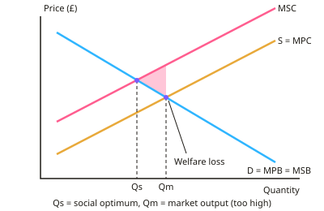

GCSE Economics · Topic 6
Market Failure and Microeconomic Intervention
This topic explains why free markets sometimes get it wrong, and what governments can do about it.
We will look at externalities, public goods, merit and demerit goods, and information failure.
Then we evaluate government responses, like taxes, subsidies and regulation, and see how intervention can itself fail.
- 4 subtopics
- 178 questions
- Free: 6.1 notes and 10 questions
In this topic
- 6.1Externalities: private and social costs and benefitsFree below · 57 questions
- 6.2Public goods, the free-rider problem, and merit and demerit goodsOpen in Full Marks · 43 questions
- 6.3Information failure and government responses: taxes, subsidies, regulation and maximum and minimum pricesOpen in Full Marks · 44 questions
- 6.4Government failure and case study evaluation (sugar tax, plastic bag charge or congestion charging)Open in Full Marks · 34 questions
6.1 · Free notes
Externalities: private and social costs and benefits

Key points
- An externality is a cost or benefit that falls on a third party who is not part of the transaction, and it is not reflected in the market price.
- Private costs are paid by the producer or consumer directly involved. External costs fall on third parties. Social cost = private cost + external cost.
- Private benefits go to the consumer or producer involved. External benefits go to third parties. Social benefit = private benefit + external benefit.
- Negative externalities include factory pollution (production), and passive smoking, noise and congestion (consumption). On a graph, MSC lies above MPC.
- Positive externalities include education, vaccination, R&D and well-kept gardens. On a graph, MSB lies above MPB.
- Free markets ignore externalities, so they produce where private marginal benefit equals private marginal cost. This leads to overproduction of goods with negative externalities and underproduction of goods with positive externalities.
- Welfare loss (deadweight loss) is the triangle between the market output and the social optimum. It shows units made whose social cost is greater than their social benefit. This is a type of market failure.
- Worked example: private cost £50 per unit and external cost £20 per unit gives a social cost of £70 per unit. With 1,000 units, the total external cost is £20,000.
- Governments try to internalise the externality with indirect taxes on negative externalities and subsidies for positive ones. They also use regulation, bans, tradable permits and information campaigns. UK examples are the 5p plastic bag charge (2015) and the Soft Drinks Industry Levy (2018).
- Evaluation points: it is hard to put an exact £ value on external costs. Taxes may be regressive and may not work if demand is inelastic. Pollution can cross borders. Good answers use the words third party, social optimum and internalise.
In more detail
- Worked social cost: a factory's private cost is £40 per unit and pollution adds an external cost of £15 → social cost = £55 per unit. A £15 tax per unit would make the firm pay the full cost.
- Worked external benefit: a vaccine protects the person who has it (private benefit) and also makes it less likely others catch the disease (external benefit), so vaccines are under-consumed without help.
- Real-world taxes: the UK charges Air Passenger Duty on flights and Landfill Tax on waste, partly to reflect their external costs.
- Exam tip: on a diagram the gap between MSC and MPC is the external cost. Mark the market output (Q) and the social optimum (Q*), and shade the welfare loss.
Practice
Externalities: private and social costs and benefits: 10 questions
Pick an answer to check it, or open the answer for the explanation.
1. Which is the best definition of an externality?
- The extra profit a firm makes from exporting
- A cost or benefit to a third party not reflected in the market price
- A cost paid only by the producer
- A tax charged on every item a firm sells
Show answer
B: A cost or benefit to a third party not reflected in the market price. An externality is a spillover cost or benefit that affects people outside the transaction and is not included in the price paid.
2. A quarry has a private cost of £40 per tonne and an external cost of £15 per tonne. What is the social cost per tonne?
- £25
- £40
- £15
- £55
Show answer
D: £55. Social cost = private cost + external cost = £40 + £15 = £55 per tonne.
3. Which is an example of a positive externality of consumption?
- A driver paying for petrol
- A firm paying its workers wages
- Noise from a nearby airport
- A vaccinated person lowering others' risk of infection
Show answer
D: A vaccinated person lowering others' risk of infection. Vaccination protects other people who did not pay for it, which is an external benefit to third parties.
4. A chemical works discharges waste into a river, harming a fishing business downstream. This is a:
- merit good effect
- private benefit of consumption
- positive externality of production
- negative externality of production
Show answer
D: negative externality of production. The fishing business is a third party that suffers a cost the chemical firm does not pay, so it is a negative production externality.
5. In a free market, a good with a negative externality will tend to be:
- underproduced compared with the social optimum
- produced at the social optimum
- overproduced compared with the social optimum
- not produced at all
Show answer
C: overproduced compared with the social optimum. Producers ignore the external cost, so private cost is below social cost. Price is too low and output is above the social optimum.
6. A course has a private benefit of £120 per student and a social benefit of £200 per student. What is the external benefit per student?
- £120
- £200
- £320
- £80
Show answer
D: £80. External benefit = social benefit − private benefit = £200 − £120 = £80 per student.
7. Why does welfare loss occur when there is a negative externality?
- Units are made whose social cost is greater than their social benefit
- Consumers buy too little of the good
- Too few firms enter the market
- Prices are set too high by the government
Show answer
A: Units are made whose social cost is greater than their social benefit. Output beyond the social optimum has marginal social cost above marginal social benefit, so society loses overall welfare.
8. A factory makes 2,000 units a week and each unit creates £3 of external cost. What is the total weekly external cost?
- £2,000
- £600
- £3,000
- £6,000
Show answer
D: £6,000. Total external cost = 2,000 units × £3 per unit = £6,000 per week.
9. Why does a free market underproduce goods with positive externalities?
- Governments ban the goods
- Consumers consider only their private benefit, not the benefit to others
- Producers always charge too much
- Costs of production are always too high
Show answer
B: Consumers consider only their private benefit, not the benefit to others. Buyers decide using private benefit, so demand is lower than the social benefit. Output is therefore below the social optimum.
10. Which government action is most likely to internalise a negative externality?
- A maximum price on the good
- A per-unit tax equal to the external cost
- A subsidy to the polluting firm
- Removing all regulation
Show answer
B: A per-unit tax equal to the external cost. A tax equal to the external cost makes the producer pay the full social cost, which moves output towards the social optimum.
Keep going in Full Marks
Full Marks has 57 questions on Externalities: private and social costs and benefits (47 more than here), set out in practice levels. You also get notes and 3D models for all 4 subtopics of Market Failure and Microeconomic Intervention, plus games, timed exams and past papers.